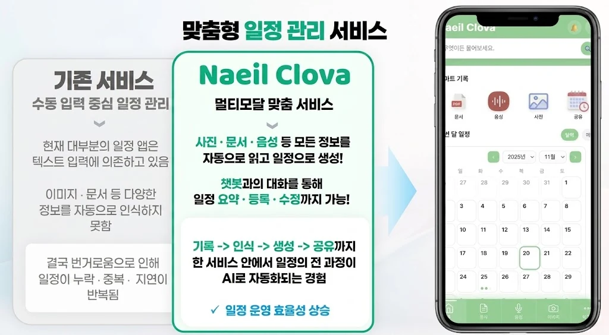
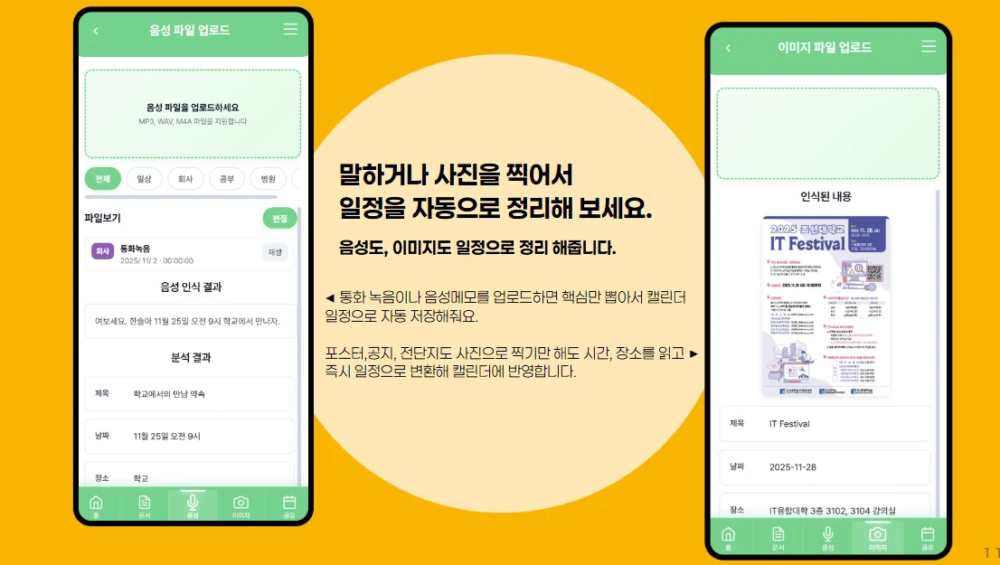
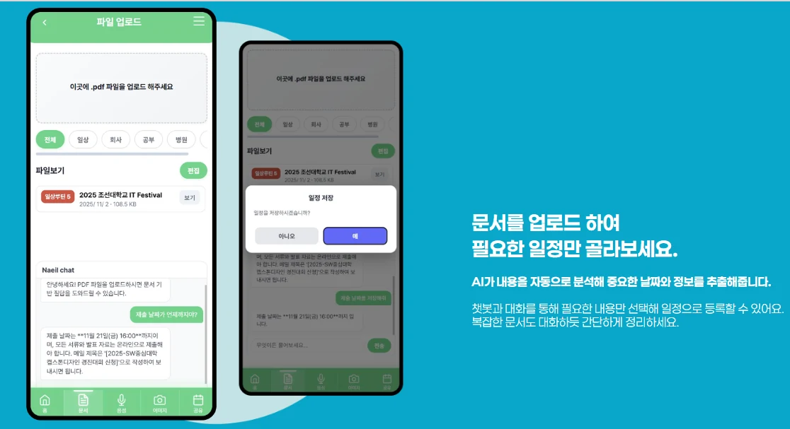
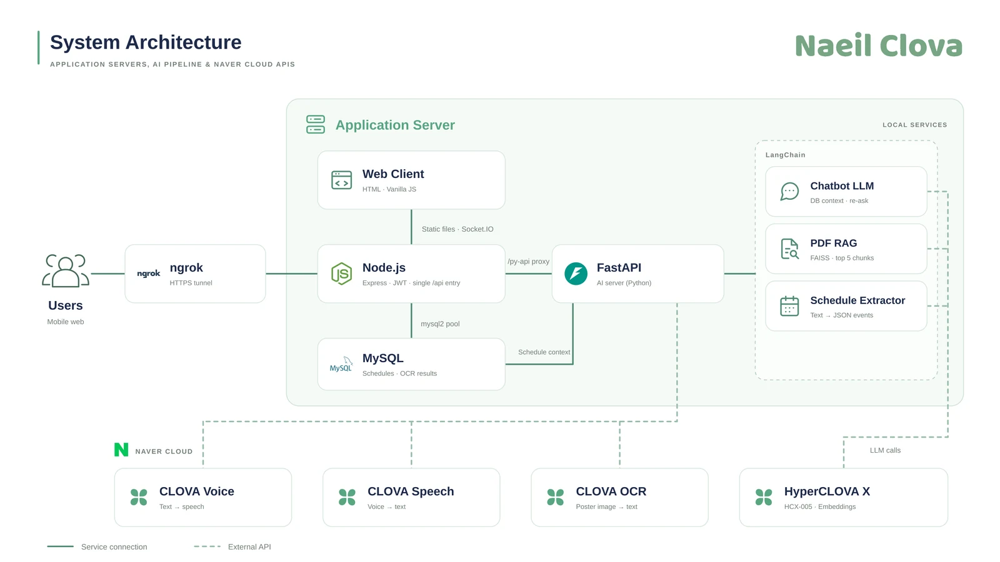

행사 포스터, 가정통신문, 통화 녹음, 공지 문서의 일정을 캘린더에 다시 옮겨 적는 부담을 줄이는 서비스. CLOVA OCR · Speech로 입력을 텍스트로 바꾸고, HyperCLOVA X가 날짜 · 시간 · 제목 · 장소를 JSON으로 구조화함.
2025 호남권 LLM 해커톤(3일)에서 최우수상을 받았고, 같은 서비스로 K Intelligence 프롬프트 엔지니어링 해커톤에서 개발 프롬프트 설계를 발표해 본선 5위에 올랐음. 이후 개인 저장소에서 PDF 질의응답, 역할별 LLM 분리, DB 연계를 더함.
최우수상2025 호남권 LLM 해커톤
1,020팀 중 5위K Intelligence 프롬프트 해커톤 본선
LLM 3개확장 후 역할 분리 (챗봇 · PDF RAG · 일정 추출)
문제 정의
기존 일정 앱은 대부분 텍스트 입력에 의존함. 사진 · 문서 · 음성에 담긴 일정은 사람이 읽고 다시 입력해야 해서, 번거로움 때문에 등록을 미루다 일정이 누락되거나 겹치는 일이 반복됨.

기존 서비스와의 차이: 기록 → 인식 → 생성 → 공유를 한 서비스에서 (발표자료)
페르소나 - 가정통신문을 사진으로 찍어 올리고, 회의 녹음을 업로드해 일정을 정리하려는 41세 워킹맘
목표 - "1분 걸리던 등록을 10초로": 입력 형식과 관계없이 캘린더에 바로 넣을 수 있는 일정으로 변환
내 과제 - 형식이 제각각인 입력에서 캘린더에 필요한 필드만 정확히 뽑아내는 AI 서버
주요 화면

음성 · 포스터 입력: 제목 · 날짜 · 장소를 뽑아 일정 카드로 표시

PDF 질의응답(확장): 문서 내용으로만 답하고 일정으로 저장
시스템 아키텍처

시스템 아키텍처 (확장 버전): Express 단일 진입점 → FastAPI AI 서버 → LangChain 3개 역할 · NAVER CLOVA API
진입점 - Express의 웹 화면 파일 제공 · JWT 쿠키 인증, /py-api를 통한 FastAPI 프록시, Socket.IO 기반 공동 다이어리 채팅
AI 서버 - FastAPI의 포스터 이미지 텍스트 변환(CLOVA OCR), 음성 텍스트 변환(CLOVA Speech), 답변 음성 생성(CLOVA Voice)
LLM 3개 역할 - HyperCLOVA X HCX-005 기반 챗봇(DB 일정 주입 · 못 찾으면 재질의), PDF RAG(250자 청크 · ClovaX 임베딩 · FAISS 상위 5개), 일정 추출(텍스트 → JSON 배열)
데이터 - MySQL에 일정 · OCR 결과 저장, Express는 연결 풀로 읽기 · 쓰기, FastAPI는 챗봇 맥락 구성 시 직접 조회
일정 추출 프롬프트
서비스의 핵심은 OCR · STT로 얻은 텍스트를 캘린더 필드로 바꾸는 한 번의 LLM 호출. 대회 때 만든 프롬프트와 확장하며 다시 쓴 프롬프트는 설계 방향이 다름.
항목
대회 버전
확장 버전
호출 방식
비서 역할 시스템 프롬프트를 대화와 공유 · 온도 0.2
추출 전용 인스턴스, 대화 기억 없이 단독 호출 · 온도 0.1
처리 단계
요약 → 정보 추출 → 분류 → JSON 출력 4단계 지시
단계 없이 필드 정의만
장소 규칙
주최 · 주관 · 후원 · 예매처 · 기관명은 장소가 아님 → null, 기관은 notes로. 공간 단어(장소 · 홀 · 센터 등)가 있을 때만 기록
"물리적 장소", notes는 "주최, 주관 등"으로 짧게 정의
연도
지시 없음
현재 연도를 넣고, 연도가 없으면 그 연도로
출력 형식
예시 JSON 1개 제시
"JSON 배열만, 설명 · 마크다운 금지"
확장 버전은 연도 누락과 출력 형식 문제를 줄이는 쪽으로 바꿨지만, 대회 때 효과를 봤던 장소 규칙은 짧아졌음. 어느 쪽이 더 정확한지는 아직 측정하지 않았고, 비교를 위해 입력 유형별 평가 세트 22개(포스터 · 음성 · 여러 일정 · 일정 없음 · 상대 날짜)와 실행 스크립트를 만들어 두었음.
LLM이 JSON 앞뒤에 설명 문장이나 코드 블록 표시를 붙이면 그대로 파싱할 수 없었음.
해결
응답에서 첫 [부터 마지막 ]까지만 잘라 파싱하고, 배열이 없거나 파싱에 실패하면 예외 대신 빈 배열을 돌려 잘못된 일정이 저장되지 않게 함. 확장 버전에서는 프롬프트에도 "설명 · 마크다운 없이 JSON 배열만"을 명시함.
결과
이후 파서를 분리해 정상 JSON · 코드 블록 JSON · 배열 없는 응답 · 잘못된 JSON · 빈 배열 5가지 모의 입력의 처리를 확인함. 실제 LLM의 JSON 생성 성공률 측정은 아님.
③ 한 LLM이 대화 · 추출을 함께 맡던 구조: 역할 분리와 재질의
문제
대회 버전은 LLM 인스턴스 하나(최근 대화 4턴 기억)가 대화와 일정 추출을 함께 맡았음. PDF 질의응답을 더하려면 기능마다 다른 온도와 출력 형식이 필요함.
해결
챗봇(0.2) · PDF RAG(0.2) · 일정 추출(0.1)로 인스턴스를 나눴음. 추출은 대화 기억 없이 단독으로 호출하고, 챗봇 응답은 {answer, source_data, confidence, needs_retry}로 받아 needs_retry면 DB를 다시 조회해 한 번 더 묻게 함.
결과
기능별로 프롬프트를 따로 고칠 수 있는 구조가 됐고, AI 엔드포인트가 9개에서 13개로 늘었음.
개발 프롬프트 설계 (K Intelligence)
대회 당시 서버 전체를 한 번에 생성하도록 요청하면 일부 기능이 빠지는 일이 있었음. 그래서 개발 요청을 단계로 나누고, 단계마다 필요한 맥락만 주는 방식을 정리해 발표함.
1. 목표 전달 · 구체화 - 서비스 목표와 화면 구성을 먼저 합의
2. 디렉터리 구조 - 파일 구조를 먼저 출력하게 해 이후 요청의 기준으로 사용
3. main.py 초안 - FastAPI 핵심 기능과 엔드포인트 명세를 주고 생성
4. AI 모듈 - CLOVA Studio 예제 코드를 함께 넣어 llm · ocr · stt · tts 모듈 생성
5. Express 서버 - 프록시 · 파일 업로드 · 임시 파일 삭제 · MySQL 풀 조건을 명시해 생성
개발용 시스템 프롬프트에는 단계적 사고를 유도하는 문장("Take a deep breath and work on this problem step-by-step")을 넣고 같은 요청으로 적용 전후를 비교함. 정성 비교였고 수치로 측정하지는 않았음.
대회 이후 확장 (개인 저장소)
영역
대회 버전 → 확장 버전
LLM 구성
인스턴스 1개가 대화 · 추출 담당 → 챗봇 · PDF RAG · 일정 추출 3개로 분리
음성
텍스트 변환까지만 → 변환 후 제목 · 날짜 · 장소 추출, 일정으로 저장
문서
없음 → PDF를 250자 청크(중첩 40)로 나눠 ClovaX 임베딩, FAISS k=5 검색, 문서 밖 질문에는 "답변이 어려움"
DB 연계
없음 → 저장된 일정과 최근 OCR 결과 50건을 조회해 질문 앞에 맥락으로 주입
진입점
프론트가 AI 서버를 직접 호출 → 모든 요청을 Express /api 하나로 받아 AI 서버로 프록시
회고
3일짜리 대회에서 가장 효과가 컸던 것은 더 좋은 모델이 아니라 "모르면 비워 둔다"는 규칙. LLM을 서비스에 붙일 때는 정답을 잘 맞히게 하는 것만큼 틀릴 때 어떻게 멈추게 할지를 먼저 정해야 한다는 것을 배웠음.
다시 코드를 점검하며 부족한 점도 확인함. 상대 날짜 변환 규칙은 문서에만 있고 실행 프롬프트에 빠져 있었고, 확장하면서 장소 규칙이 짧아졌으며, 일부 API가 사용자 ID를 고정값으로 쓰고 있어 사용자별 데이터 분리가 되지 않음.
프롬프트를 바꿀 때마다 같은 질문 세트로 비교했어야 함. 그래서 입력 유형별 평가 세트와 실행 스크립트를 만들었고, 다음 단계는 두 프롬프트의 필드별 정확도와 장소를 지어내는 비율을 같은 세트로 재는 것.